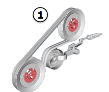
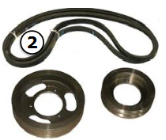

Configuration de la séparation
Série T
| Élément | Réglage |
|---|---|
| Position de la grille de séparation | Ouverte |
| Position du contre tire-paille arrière | Ouverte |
| Régime du séparateur | Bas |
| Crête | Non nécessaire |
| Volet en caoutchouc | Non nécessaire |
Réduction de régime du séparateur selon la culture
| Culture | Réduction de régime |
|---|---|
| Pois | Oui |
| Lupins, pois chiches, soja | Non |
Pièce du séparateur T
Pour le maïs et les autres grains utilisez un régime recommandé de 310 tr/min.
Puissance provenant du boîtier d’engrenages
Séparateur standard - bas
Série W
| Élément | Réglage |
|---|---|
| Position du contre tire-paille | Ouverte |
| Réduction du régime du tire-paille | Oui, si la qualité des graines est importante Adresse RC1 140 pour régime normal - 100 pour régime réduit - 75 |
| Crêtes | Non |
| Séparateur transversal à doigts | Non |
| Volet en caoutchouc | Non nécessaire |
| Configuration des poulies et courroies | Dimensions | Références | Images |
|---|---|---|---|
| Avec réduction de vitesse | 286 mm et 217 mm | AH163931, H135849, H135850 |  |
| Sans réduction de vitesse | 266 mm (chacune) | — |  |